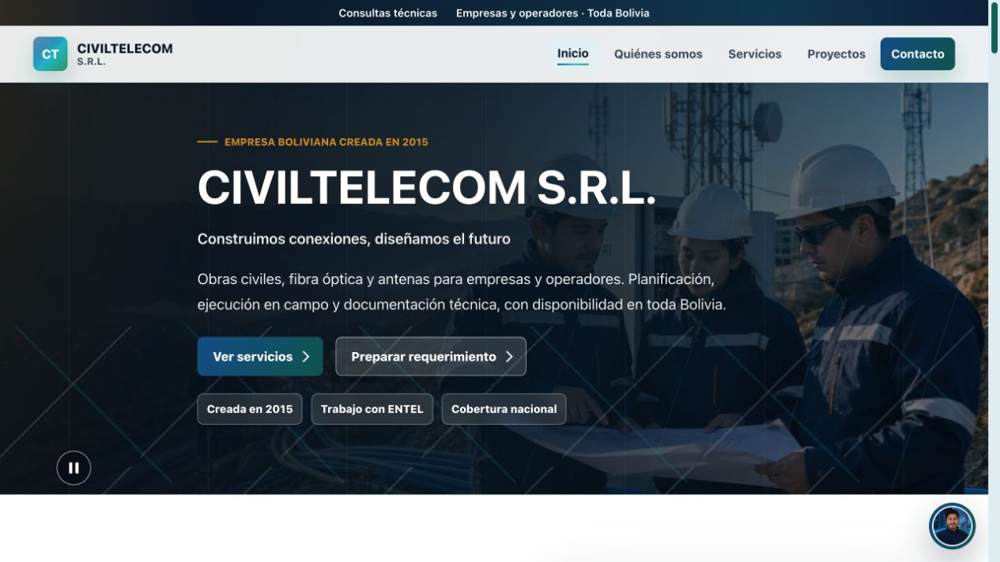

01
Desarrollo Web
Páginas claras y adaptables que ayudan a explicar tus servicios y facilitan el contacto.
Crear mi proyectoJuan Daniel Marín · Desarrollador web · La Paz 🇧🇴
Diseño y desarrollo páginas adaptables para presentar tus servicios, explicar tu propuesta y facilitar que te contacten.
Nexora Digital es mi proyecto de portafolio. Puedes revisar un sitio empresarial publicado antes de contratarme.
Visual de ejemplo · Sin métricas de clientes
01 — Servicios
Soluciones claras para ganar presencia, eficiencia y capacidad de crecimiento.
Páginas claras y adaptables que ayudan a explicar tus servicios y facilitan el contacto.
Crear mi proyectoPrototipos y funciones con IA cuando aportan valor a un problema concreto.
Solicitar consultaExploramos flujos sencillos para reducir tareas manuales y errores repetidos.
Optimizar mi negocioInterfaces y herramientas web ajustadas al alcance de cada proyecto.
Hablar de mi solución02 — Cómo trabajamos
Menos incertidumbre, más dirección. Cada fase tiene un propósito y una decisión compartida.
Analizamos las necesidades del negocio.
Creamos experiencias digitales modernas.
Construimos soluciones rápidas y seguras.
Publicamos y optimizamos el proyecto.
03 — Proyecto destacado

SITIO PUBLICADO / 01Sitio empresarial publicado · Cinco páginas
Desarrollé cinco páginas conectadas para presentar servicios, proyectos y formas de contacto. Revisa la navegación y el diseño en tu propio dispositivo. Las imágenes del sitio son ilustraciones generadas con IA; su formulario prepara un resumen, pero no envía mensajes.
04 — Sobre mí
Soy Juan Daniel, desarrollador web en La Paz. Trabajo con HTML, CSS y JavaScript, y también con React, Next.js y TypeScript cuando el proyecto lo requiere.
En Nexora Digital muestro cómo presentaría una oferta web clara. Antes de empezar un encargo, acordamos las secciones, el contenido, las revisiones y la entrega.
Cuéntame qué necesitas¿Quieres que tu negocio tenga una página clara y fácil de usar?
Ver cómo trabajar conmigoHablemos de tu web
Escríbeme por Contra o Fiverr con tu objetivo, las secciones que imaginas y cualquier sitio que te guste. Te responderé con una propuesta de alcance y plazo.
La Paz, Bolivia 🇧🇴 · Español e inglés